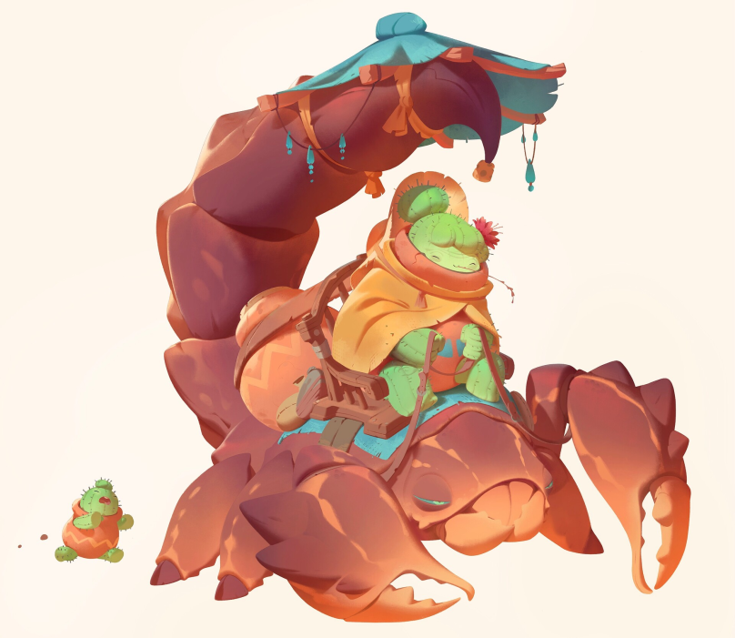

Pricklefolk

Species Overview
Physiology
Most Pricklefolk stand around three and a half feet tall. Stubby legs make them waddle while walking, and some are prone to tumbling at a full sprint. Despite stemming from similar roots, Pricklefolk come in a staggering variety of forms - from thin and fuzzy to rotund and pointy. Older folk in their flowering stages of life often style their blooming flowers and berries as jewelry and accent pieces.
Demeanor
Throughout the Thunda Sands, the Pricklefolk are known for their generous hospitality and willingness to welcome any and all into their communities. It's a common joke that their villages are the only safe places in the region - even Thunda Barbarians keep things civil while passing through.
History
No precise record tells when or how the Pricklefolk first popped up in the Outer World, but they must have sprouted sometime in the 4th Aeon, after the creation of the Blazing Garden. Their communities are concentrated around the Cereus Plateau, a stretch of land between the Sol Alliance and the Thunda Sands.
Pricklefolk folklore holds that their origin stems from one brave cactus named Cereus. All the cacti of the Thunda Sands were baking in the sun - it was all they did, every day. One day, Cereus simply said "aren't we all tired of sitting around in this hot sun doing nothing?" So they stood up from their roots, others followed, and that was that.
Typical Names
Pricklefolk raise their young by meticulously tending a clipping of themselves until it, too, stands up. First names follow no real custom - usually just whatever sounds nice. Familial names derive from the botanical name of the original cacti they sprung from.
Examples: Angi Senita, Sabo Tender, "Old Man" Pincushion

Art by: Nicholas Kole
Adventurers
Many Pricklefolk go through a period of wanderlust, dreaming of what lies beyond the Plateau - often sparked by the grand tales of Cereus or by adventurers passing through, whom many Pricklefolk tag along with. Their hardiness against the desert heat and ability to sprout food make them excellent Guides across the Blazing Garden.
Outlook
The Pricklefolk lead joyful lives, and many dedicate themselves to hospitality work. Their rest-and-recoveries are scattered throughout the Plateau, welcoming any and all for respite. Pricklefolk will freely migrate between their communities whenever it "feels right".
Typical mantras include:
- Plant your roots deep, but remember you can always stand up.
- You may have a thorny exterior, but always wear your heart on your sleeve.
- Share your life's fruits, but never let yourself be picked clean.
Abilities
Species Size
Small
Unlike the massive cacti you carve your homes from, you are quite squat.
- You are a Small Species.
Innate Ability
A Dozen Needles?
Warm embraces are hard to come by when you're wrapped in thorns.
- Once per Fight, on taking Damage from a Melee Attack, you may discharge a set of thorns to deal a Heart of Damage back to the Attacker.
Innate Ability
Of Sandy Soil
You grew up (literally) under the Sun Machine's gaze - its blazing heat is nothing to you.
- You count as always wearing an Extreme Heat Outfit (Source, pg. 172) without it counting as an Outfit or taking up Inventory Slots.
Maturative Ability
Berry Kind of You
Like all Pricklefolk in time, sweet and tart berries have begun to sprout from you.
- You may grow up to a maximum of 5 Berries, at a rate of 1 Berries per Day, which act as Treats (Source, pg. 177).
- In a Fight, one must spend an Action to pick a Berry from you, which you may choose to avoid with a Deftness Check. The Picker may eat the Treat as part of the Action.
- During Downtime, you may elect to start your next Adventure at 0 Berries in exchange for using them as 1 Unit of Liquid Magical Material in Crafting, for you or another person. The Unit only lasts for the Downtime Period, after which it spoils.